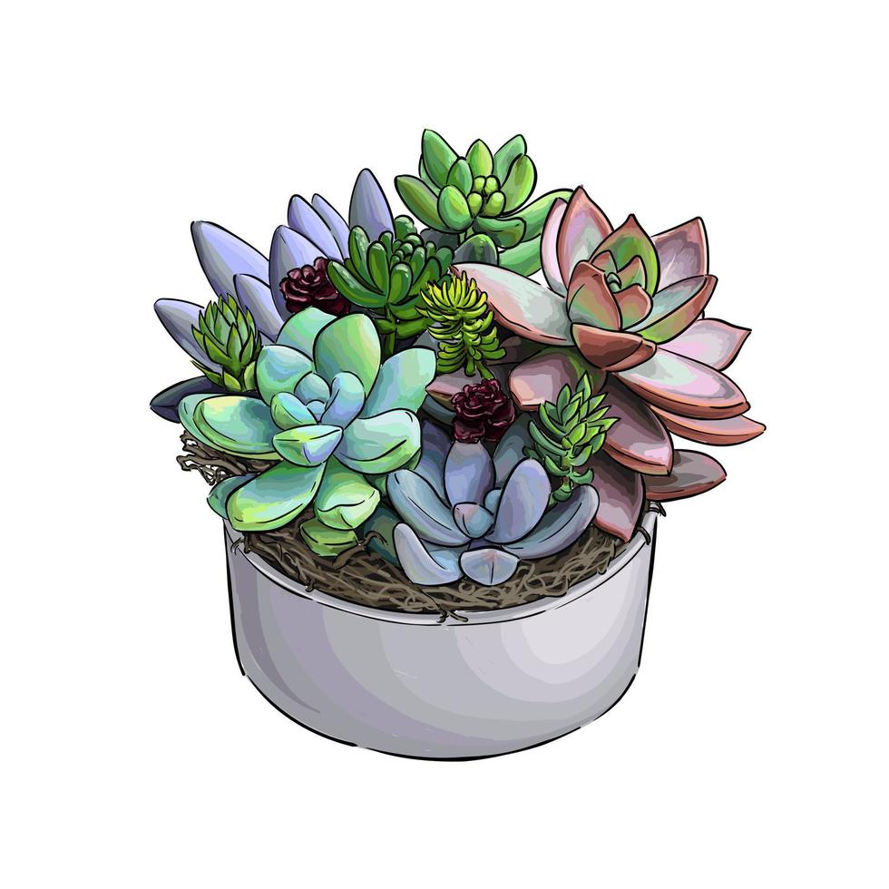
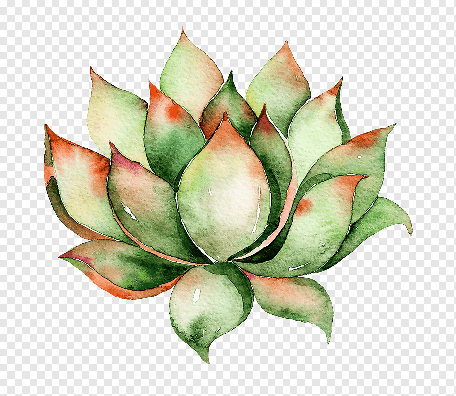

Quizá las has visto adornando lugares dentro o fuera de tu casa, también abundan en parques o áreas comunes de la ciudad. Cada día son más populares y están presentes en casi todos los jardines del país y en el mundo silvestre. Las plantas suculentas son gran un universo de belleza vegetal por sus cualidades decorativas y su sencillo mantenimiento. Son originales, diversas, versátiles y la mayoría de ellas sorprenden por sus flores, colores y llamativas formas. Sin embargo, poco se conoce sobre estas únicas especies, capaces de resistir a temperaturas y condiciones extremas, siendo íconos de resiliencia con un rol clave en el ecosistema frente a la crisis hídrica. En este artículo, con la ayuda de expertos te contaremos más sobre ellas, su importancia, cómo diferenciarlas y algunas consejos para conservarlas.
Las suculentas han captado la atención. Más allá de sólo su uso en jardines o espacios públicos, hablamos de plantas comprenden muchas especies, de las cuales algunas están presentes en el mundo silvestre, siendo claves para el ecosistema, y otras que son populares para su uso ornamental. Como sea, se trata de increíbles plantas que han evolucionado para adaptarse a la sequía y sobrevivir. Pero, ¿qué más sabemos sobre ellas?
28/03/2025 - Debido a que las suculentas no son un grupo taxonómico fijo, existen miles de especies de ellas clasificadas en diferentes familias. La mayoría de estas plantas pertenecen a las aizoáceas, a las cactáceas, a las crasuláceas y a las euforbiáceas, con más de mil especies en cada una de ellas.
Las suculentas se encuentran en todo el mundo, en casi todos los tipos de hábitat, con mayor frecuencia en partes áridas o semiáridas del mundo. Están especialmente adaptadas para lidiar con condiciones secas y desérticas. Además, poseen una característica muy especial que las distingue y las destaca frente a las otras plantas ya que pueden almacenar agua en uno o más de sus órganos; sus hojas, tallos o raíces siendo inusualmente carnosos y agrandados. Ellas comparten la particularidad de hacer la fotosíntesis en dos fases: una nocturna y otra diurna. Estas dos características en conjunto, hacen que sean las preferidas al ser muy eficientes desde el punto de vista hídrico al tener pocas necesidades de riego.
Siguenos en nuestras redes sociales: